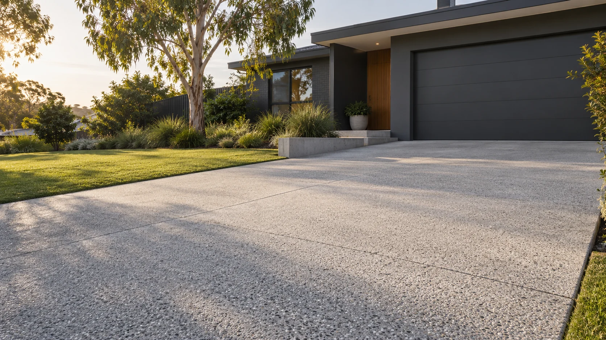

Concrete
A solid base for everyday life. Create practical outdoor surfaces that connect your home to the space around it.

ARCHITECTURAL ILLUSTRATIONBRISBANE, QUEENSLAND
Concrete. Landscaping. Retaining.
Make more of the space around your home.
SOLID FOUNDATIONS. BETTER OUTDOORS.
A practical surface. A more usable garden. A new shape to the space outside.
D&N Concrete & Landscape Solutions brings concreting, landscaping and retaining work to Brisbane homes. Start with what you have. Build towards what you want.
A solid base for everyday life. Create practical outdoor surfaces that connect your home to the space around it.
Give the outdoors a clearer purpose. Turn an overlooked area into somewhere you can use, enjoy and make your own.
Bring definition to changing ground levels. Talk through your site and explore how retaining work could shape your outdoor space.
REAL WORK. FROM THE GROUND UP.
Project photos from D&N's Instagram, supplied for this concept. The architectural image at the top of this page is an illustration.
A CLEAR PLACE TO START
You don't need to have every detail figured out to start a conversation.
Get in touchA few photos and your suburb help explain the project and where the work is needed.
Tell D&N what you'd like to change — a new concrete area, landscaping or retaining work.
Discuss the space, the scope and what information is needed to prepare a quote.
YOUR NEXT PROJECT STARTS HERE
Concrete, landscaping or retaining.
Tell D&N what you're planning.